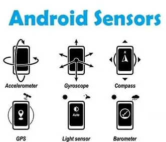

Los sensores permiten a las apps móviles obtener datos del entorno físico. Los dispositivos Android suelen incluir tres categorías principales de sensores
Para usar un sensor en Android se emplea el SensorManager. El proceso típico es: (1) detectar si el sensor existe en el dispositivo; (2) registrar un listener para recibir sus lecturas; (3) procesar los datos del sensor cuando llegan. El SDK de Android ayuda con estas tareas: permite “determinar los sensores disponibles”, “adquirir datos sin procesar” y “registrar o dar de baja listeners” para eventos del sensor . De hecho, la interfaz SensorEventListener proporciona los métodos onSensorChanged() y onAccuracyChanged(), que reciben notificaciones cuando varían los valores del sensor . En código, al iniciar una actividad se obtiene una instancia de SensorManager y se registra el listener: por ejemplo, sensorManager.registerListener(myListener, mLight, SensorManager.SENSOR_DELAY_NORMAL) habilita el sensor de luz para que envíe eventos al listener mientras la app esté activa. Es importante desregistrar (sensorManager.unregisterListener(...)) cuando ya no se necesiten los datos para ahorrar batería.
El procesamiento de la información del sensor depende del tipo de app. Por ejemplo, se pueden aplicar filtros (p. ej. promedio, mediana) a los valores recibidos para suavizar lecturas; o interpretar datos complejos (como señales del giroscopio) mediante algoritmos adicionales. Android entrega los datos “sin procesar” a alta frecuencia, y luego la app puede fusionar información de varios sensores si lo requiere (por ejemplo, combinar acelerómetro y magnetómetro para obtener orientación absoluta). En resumen, el flujo es: habilitar sensor registrar listener recibir datos en onSensorChanged() procesarlos usar en la interfaz o lógica de la app. Un video que te puede explicar mejor
← Regresar al index